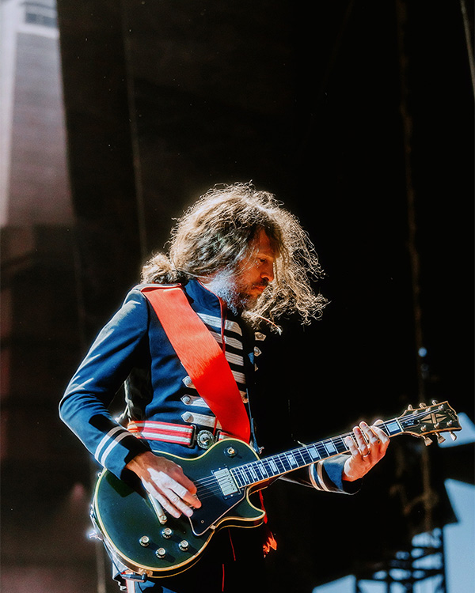

Gerard Way
Gerard Arthur Way amerikai énekes, dalszerző és képregényíró. Leginkább a My Chemical Romance rockzenekar énekeseként és társalapítójaként ismert.
2014-ben jelent meg első szólóalbuma, a Hesitant Alien. Way társszerzője és alkotója a The True Lives of the Fabulous Killjoys és a The Umbrella Academy című képregénysorozatoknak; utóbbiból később egy népszerű Netflix-sorozat készült, amely négy évadon át futott. Emellett ő alapította a DC Comics Young Animal nevű imprintjét, és ő írta annak zászlóshajó sorozatát, a Doom Patrol-t.
Instagram: https://www.instagram.com/gerardway/

Ray Toro
Raymond Toro amerikai zenész, énekes, dalszerző és lemezproducer, aki leginkább a My Chemical Romance együttes szólógitárosaként és háttérvokalistájaként ismert.
2015-ben kiadott egy szólóalbumot Remember The Laughter címmel.
Instagram: https://www.instagram.com/raytoro/
Mikey Way
Michael James Way amerikai zenész és dalszerző, aki leginkább a My Chemical Romance rockzenekar basszusgitárosaként ismert. Emellett az Electric Century rockduóban multiinstrumentalistaként és háttérvokalistaként is tevékenykedik.
Way Shaun Simonnal közösen írta a Collapser című képregényt, amely 2019 júliusában jelent meg a DC Comics kiadásában. 2024-ben Jonathan Riverával együtt írta a Christmas 365 című művet, amely a Dark Horse Comics gondozásában jelent meg.
Instagram: https://www.instagram.com/mikeyway/

Frank Iero
Frank Anthony Iero Jr. amerikai zenész, énekes, dalszerző és lemezproducer, aki leginkább a My Chemical Romance rockzenekar ritmusgitárosaként és háttérvokalistájaként ismert, valamint a supergroup, az L.S. Dunes gitárosaként. Emellett a Leathermouth post-hardcore zenekar énekese is volt.
Szólóprojektje a Frank Iero and the Future Violents (korábban frnkiero andthe cellabration és Frank Iero and the Patience) néven fut.
Első szólóalbuma, a Stomachaches, 2014. augusztus 26-án jelent meg.
Instagram: https://www.instagram.com/frankieromustdie/